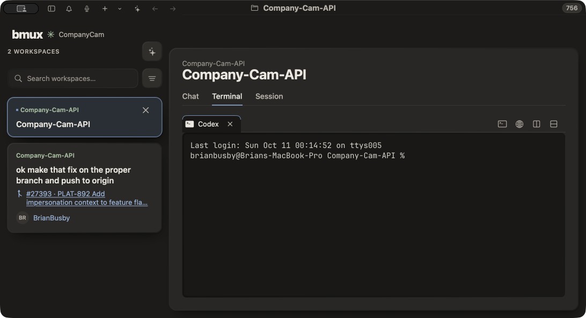
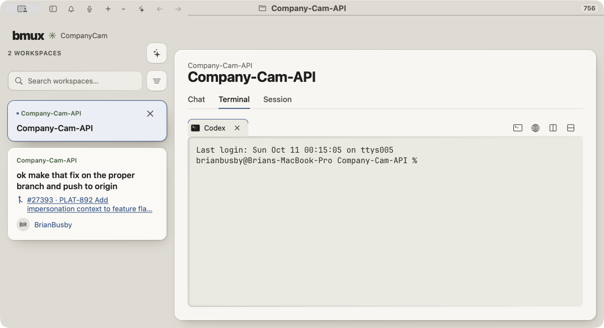

Reference and corrected native card at 1:1 screenshot scale. Both show ordinary selection; keyboard focus has a separate accessible outline. Texture remains off in the native app.



The measured 20pt header fixes the compressed 14pt row. The 15pt/600 native title, specified padding, and minimum 28pt close target are preserved. See verification notes for remaining native differences.